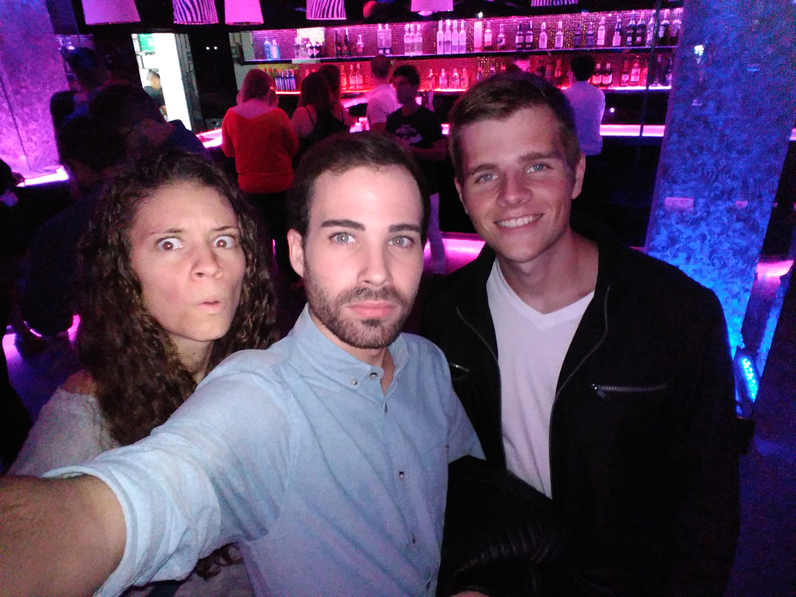

Sobre la pagina
Hola, mi nombre es Miguel, y esta pagina que estoy creando es para vosotros, para todos los que tengais curiosiad sobre el famoso juego de buscaminas o simplemente os aburrais y uerais matar un poco el tiempo.
Sobre mi
Como he dicho, me llamo Miguel, pero profundizare un poco mas en mi. Naci en Mallorca, la mejor isla del mundo. Y mi vida se puede resumir en videojuegos XD y estudios. Los videojuegos son mi mayor hobby y de los cuales aprendi muchas cosas, tanto idiomas,como valores.
Multimedia
Aqui una foto con dos de mis mejores amigos, la gente que me define y con la que vivo.
Un pequeño video en una excusión, uno de mis hábitos para desconectar.